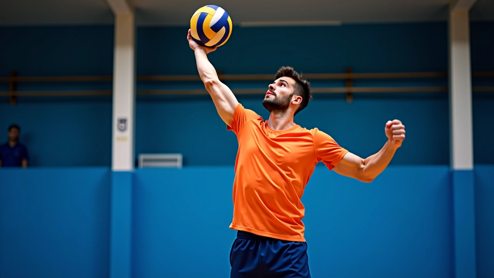
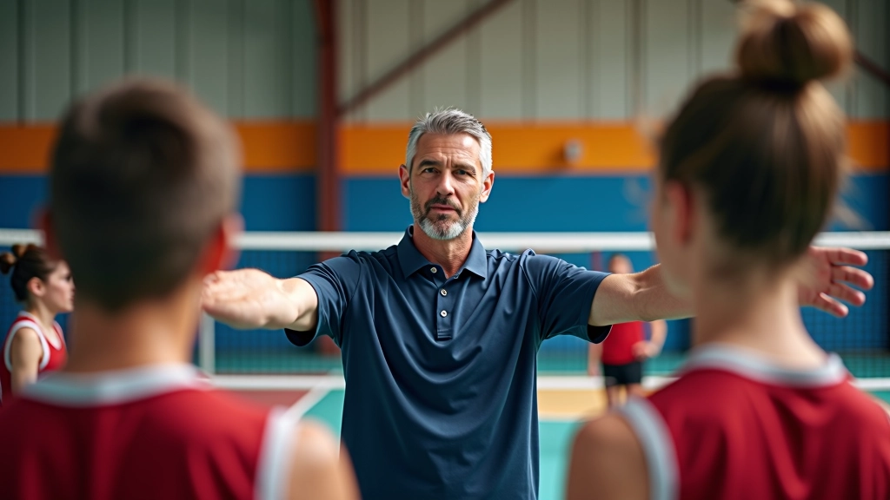
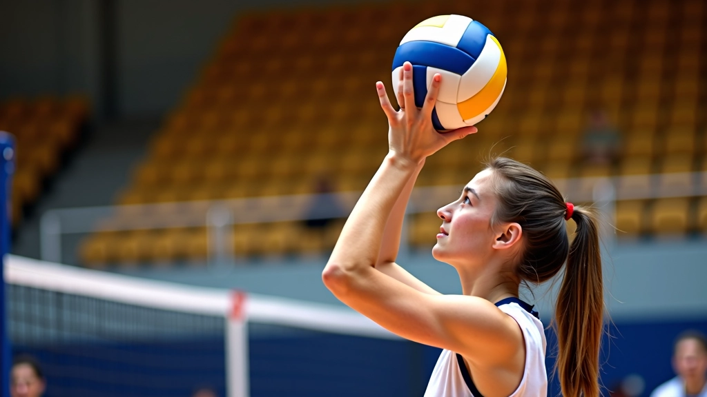
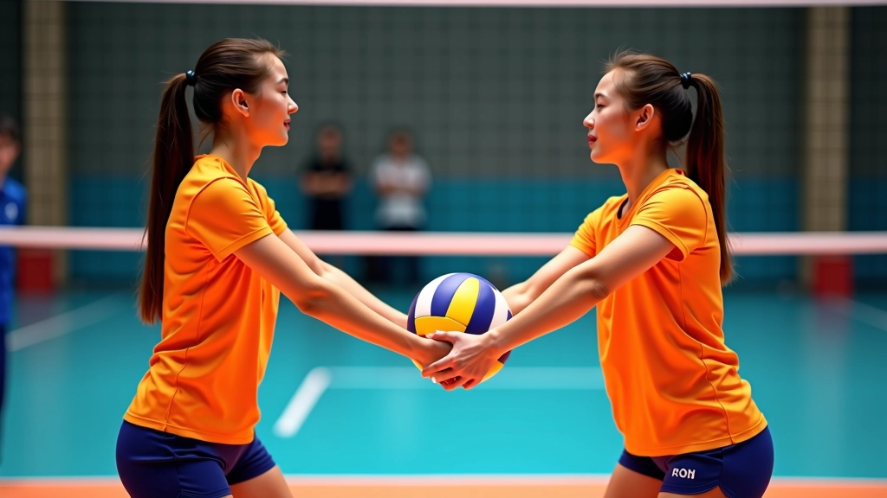

الأساسيات الصحيحة للتمرير العلوي
تعلم وضعية الجسم الصحيحة وحركة اليدين والقدمين التي تشكل أساس التمرير العلوي الفعال والدقيق.

برنامج تدريبي شامل يساعدك على إتقان تقنية التمرير العلوي من خلال تمارين منظمة وفعالة
التمرير العلوي ليس مجرد تقنية — إنه أساس لعبة كرة طائرة قوية. الكثير من اللاعبين يعتقدون أنهم يتقنون هذه التقنية بعد بضعة أسابيع، لكن الحقيقة مختلفة تماماً. التطور الحقيقي يحتاج إلى نظام تدريبي منظم يركز على التفاصيل الصغيرة التي تحدث الفارق.
نحن نقدم لك برنامج تدريبي عملي مصمم بناءً على تجارب مدربين محترفين. ستتعلم التمارين التي تطور قوتك، دقتك، وثقتك في نفسك على الملعب. المهم أنك ستفهم السبب خلف كل تمرين وكيفية تطبيقه بشكل صحيح.

قبل أن تبدأ التمارين، يجب أن تفهم البناء الأساسي للبرنامج. نحن نركز على ثلاث مراحل رئيسية: بناء الأساس، تطوير الدقة، وزيادة القوة والسرعة.
أسابيع 1-2: تركيز على الوضعية الصحيحة وحركة الأصابع
أسابيع 3-4: تحسين التحكم والتوجيه الدقيق للكرة
أسابيع 5-8: بناء القوة والسرعة والثقة في المباريات


التمرين الأول هو الأهم. يُسمى "تمرين اللمسات" وهو بسيط لكن فعال جداً. خذ الكرة بين يديك وقم بلمسها برفق مراراً وتكراراً، مع التركيز على استخدام أطراف أصابعك وليس راحة اليد. هذا التمرين يطور الإحساس بالكرة ويحسن التحكم بها.
التمرين الثاني هو "التمرير على الحائط". قف على بعد متر واحد من الحائط، وقم بتمرير الكرة للأعلى ثم استقبلها في وضعية التمرير العلوي. كرر هذا 20 مرة متتالية. هذا التمرين يساعدك على فهم الحركة الكاملة في بيئة آمنة حيث لا توجد ضغوط خارجية.
بعد إتقانك للتمارين الأساسية، يمكنك الانتقال للمستوى الثاني. تمرين "التمرير المزدوج" يعني تمرير الكرة لشريك دون أن تلمس الأرض. ستشعر بالفرق في التحكم والدقة. ابدأ بمسافة قصيرة — حوالي 3 أمتار — ثم زد المسافة تدريجياً.
تمرين آخر فعال جداً هو "التمرير المتقاطع". لاعب يتمرر لأعلى، والثاني يستقبل من وضعية مختلفة. هذا يطور المرونة والقدرة على التعامل مع الكرات غير المثالية. تمرن على هذا التمرين ثلاث مرات أسبوعياً لمدة أسبوعين ستلاحظ تحسناً ملموساً.

البرنامج المقترح يمتد على 8 أسابيع كاملة. الأسابيع الأولى تركز على الأساسيات والشعور بالكرة. في الأسبوع الثالث تبدأ بإضافة التحديات — تمرير من مسافات أبعد، وضعيات مختلفة، وسرعات متغيرة. من الأسبوع الخامس فصاعداً، تدخل مرحلة المباراة الفعلية حيث يكون الضغط أعلى والتركيز على الأداء تحت الضغط.
التزم بالبرنامج وراقب تقدمك. اكتب ملاحظات عن التحسن الذي تشعر به كل أسبوع. هذا يساعدك على البقاء متحفزاً ويعطيك صورة واضحة عن مستوى تطورك الفعلي.
النتائج التدريبية تختلف من شخص لآخر بناءً على مستوى اللياقة البدنية الأولي، الالتزام بالبرنامج، والممارسة المنتظمة. هذه التمارين مصممة كمرشد عام لتطوير مهاراتك. إذا شعرت بألم أو إصابة، توقف فوراً واستشر متخصص طبي. الهدف هو التطور الآمن والمستدام.
التمرير العلوي ليس موهبة فقط — إنه مهارة يمكن تطويرها بالممارسة المنظمة والصحيحة. البرنامج الذي قدمناه مجرب وفعال. الكثير من اللاعبين حسنوا أدائهم بشكل كبير من خلال هذه التمارين. ما يميزهم ليس الموهبة الطبيعية، بل الالتزام والاستمرار.
ابدأ من اليوم. اختر التمارين الأساسية، مارسها بانتظام، وراقب تقدمك. بعد أسبوعين ستشعر بالفرق. بعد شهر ستندهش من تحسنك. الطريق يبدأ بخطوة واحدة، والخطوة الأولى هي قرارك اليوم أن تبدأ.

فريق التحرير والمراجعة
كتب بواسطة فريق القمة الرياضية للتدريب المتقدم، متخصصون في تقديم محتوى تدريبي دقيق وسهل التطبيق.
تعلم وضعية الجسم الصحيحة وحركة اليدين والقدمين التي تشكل أساس التمرير العلوي الفعال والدقيق.

اكتشف الأخطاء التي يرتكبها معظم اللاعبين وتعلم كيفية تصحيحها بسهولة وفعالية.

ارفع مستواك إلى الحد الأقصى بتعلم التقنيات المتقدمة والاستراتيجيات التي يستخدمها اللاعبون المحترفون.